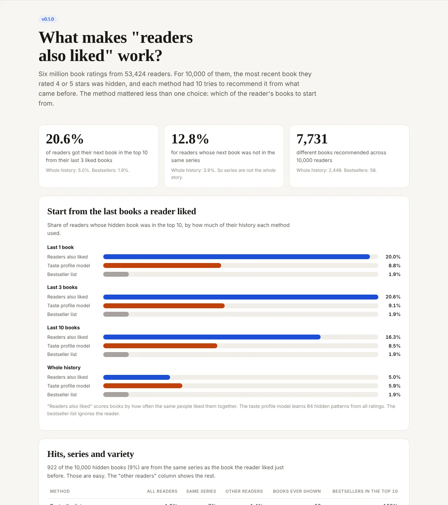

The question
Does a personalised "readers also liked" beat a bestseller list, and what makes it work: the method, or the choices around it?

Headline numbers
| Method | Hit in top 10 | Books shown |
|---|---|---|
| Bestseller list | 1.9% | 58 |
| Also liked, whole history | 5.0% | 2,448 |
| Taste profile, whole history | 5.9% | 1,202 |
| Also liked, last 3 books | 20.6% | 7,731 |
10,000 readers, the most recent book each rated 4 or 5 stars hidden. Books shown: different books recommended across all readers.
Findings
Start from the last books a reader liked
The same method finds the next book 4 times as often from the last 3 liked books as from the whole history, and recommends 3 times as many different books.
Series explain part of it, not all
9% of the hidden books continue a series. Outside series, the last 3 books still give 12.8% against 3.9%. A next in series rule is right 31% of the time when it applies, but adds nothing on top.
Part of the effect may come from how ratings were entered
The dataset says ratings are in time order, but not whether that is reading order. Readers who rate many books at once may enter them by series or author. Real reading dates would settle it.
What I would do next
- Repeat on a dataset with real reading dates.
- Blend recent and long term taste and find the best mix.
- Test new readers with 0 to 2 liked books.
Data: goodbooks-10k by Zygmunt Zając, CC BY-SA 4.0.